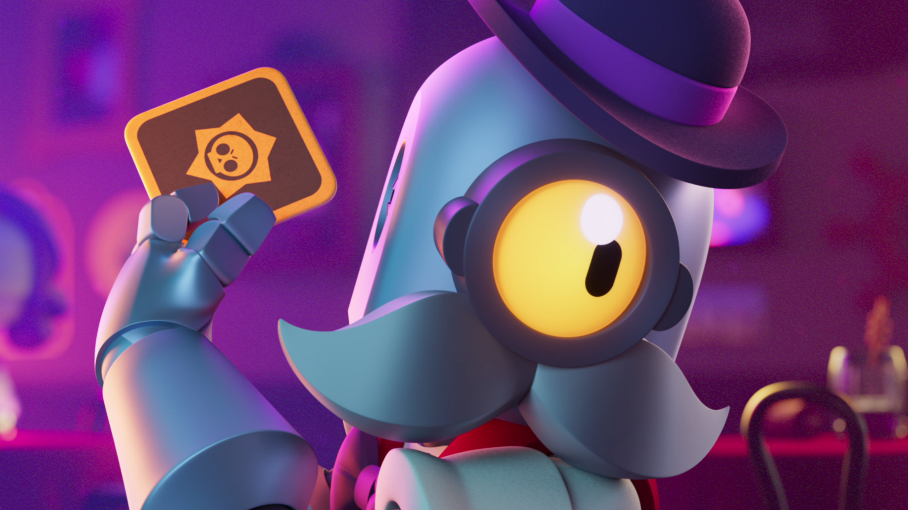
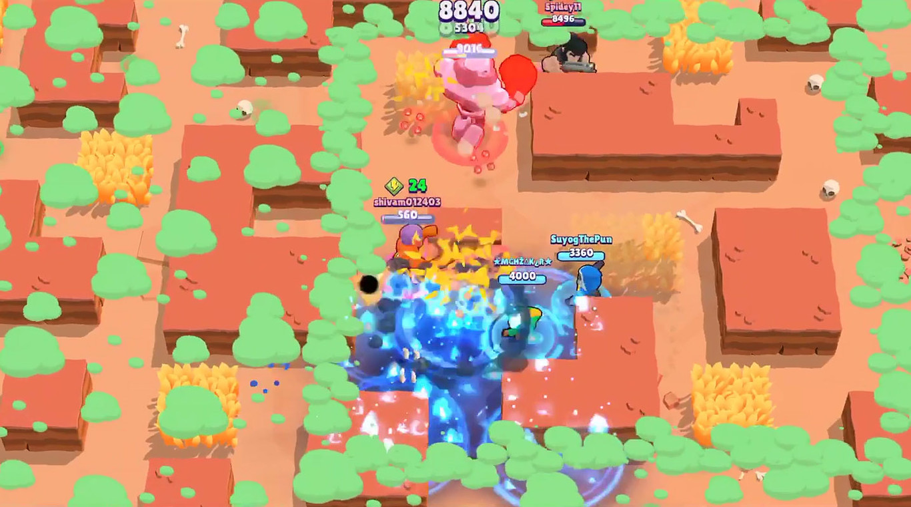

Barley
Acerca

Este personaje es un lancero de tipo controlador, porque sus básicos son usados principalmente para zonear cierta áreas vitales, para el equipo o para evitar que alguien se te acerque, sus ataqes hacen daño al impactar y si alguien lo pisa.
| Stat | Descripción |
|---|---|
| Vida | 4.800 |
| Velocidad de movimiento | Normal |
| Daño | 1.520 |
| Rango de ataque | Largo |
| Velocidad de recarga | Lenta |
La pasiva de este personaje es lanzar varias botellas que harán ocuparán una gran zona del mapa.
| Daño pasiva | 5 x 1360 |
| Rango | Muy Largo |

Sus power stars y gadgets son unicos para este perosnaje:
| Power Star | Descripción | Gadget | Descripción |
|---|---|---|---|
| Medical use | Cada ataque que haga, lo curará 400 HP | Sticky syrump mixer | En el suelo coloca un líquido que durante un tiempo reducirá considerablemente la velocidad del enemigo que la pise. |
| Extra noxious | Cada ataque tiene 200 DPS más. | Herbal Tonic | Lanzará a los compañeros cercanos, incluyendose un líquido que curará 500 HP por segundo, durante un tiempo determinado. |
Abajo se ve una demostración del brawler en acción